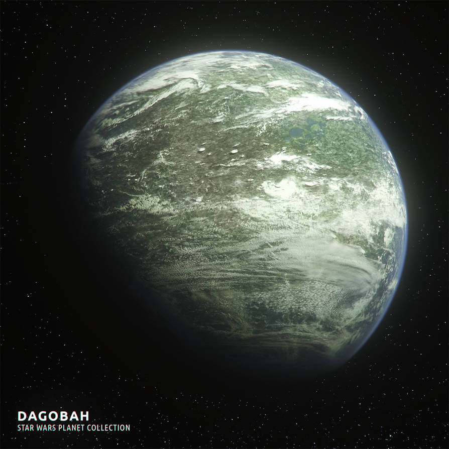

Dagobah was a planet in the Outer Rim of the Dagobah system. It was a remote world of swamps and forests, which served as a haven for Jedi Grand Master Yoda during his exile after the events of Order 66 took place.
- Location: sector
- Climate: forests
- Terrain: forest, jungle, and canyons
- Inhabitants: any habitants
Famous Events
- In the franchise, it was described as a distant planet filled with swamps and forests, and served as a refuge for Master Yoda during his exile after the destruction of the Jedi Order. It was there that Luke Skywalker received advanced training in the ways of the Force under the tutelage of Jedi Master Yoda and would later witness his death and union with the Force.